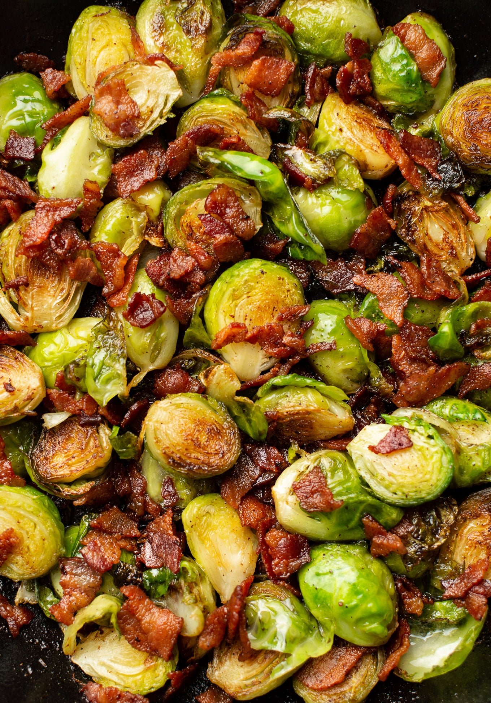

Brussels Sprouts

Description
Caramalized brussels sprouts are an easy and delicious side dish
Ingredients
- Four cups of Brussels Sprouts
- Olive Oil
- Parmesan Cheese
- Salt and Pepper
Steps
- Cut bottom of brussels sprouts, cut in half, and rinse
- Boil sprouts for five minutes to soften
- Add the olive oil into a pan and trasfer sprouts to genty toast
- Season with salt and pepper to taste
- Once caramelized, serve on a dish
- Garnish with shredded parmesan cheese